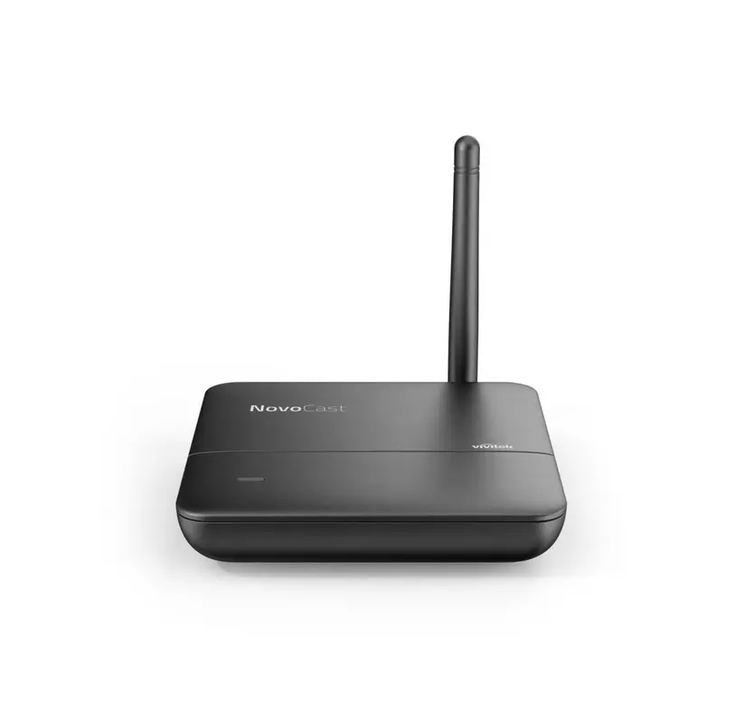

Серия NovoCast
Бюджетные устройства для быстрой организации совместной работы в небольшом офисе или в школьной аудитории. Компактное решение подключается к дисплею через HDMI и обеспечивает возможность беспроводной совместной работы в рамках принципа Bring Your Own Device. Участники переговоров или ученики просто подключаются к системе и могут вывести на большой экран тот или иной документ, или внести свой вклад в обсуждение проекта. Несмотря на низкую стоимость решения, NovoCast позволяет подключение до 40 участников, причем до четырех участников могут вывести свой контент на большой экране одновременно.